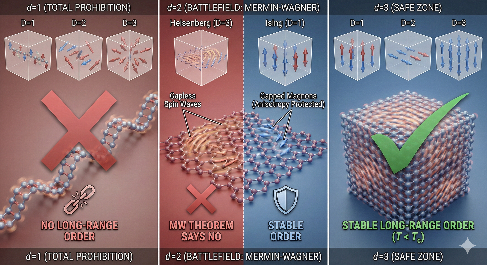
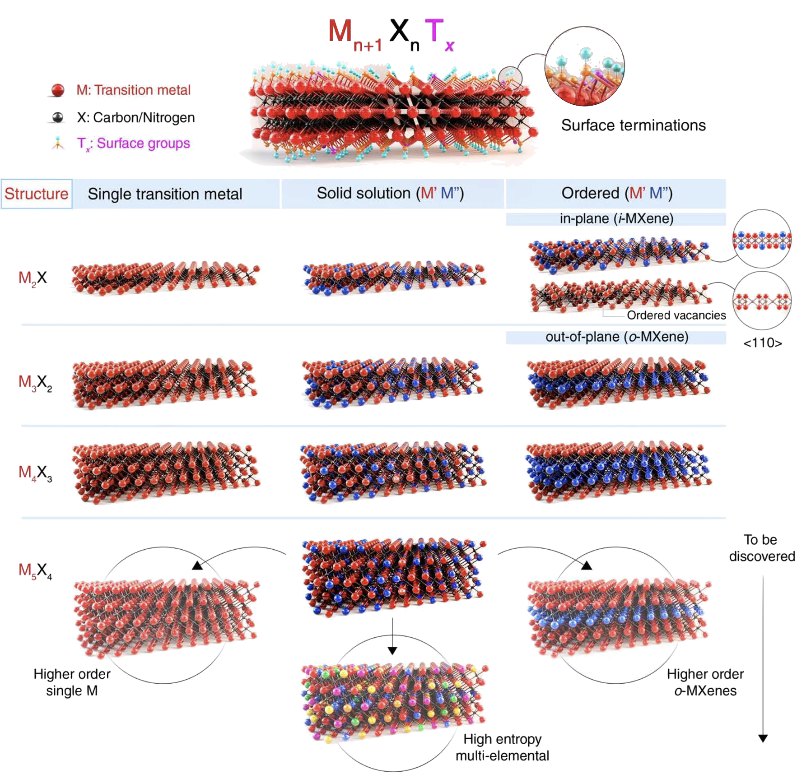
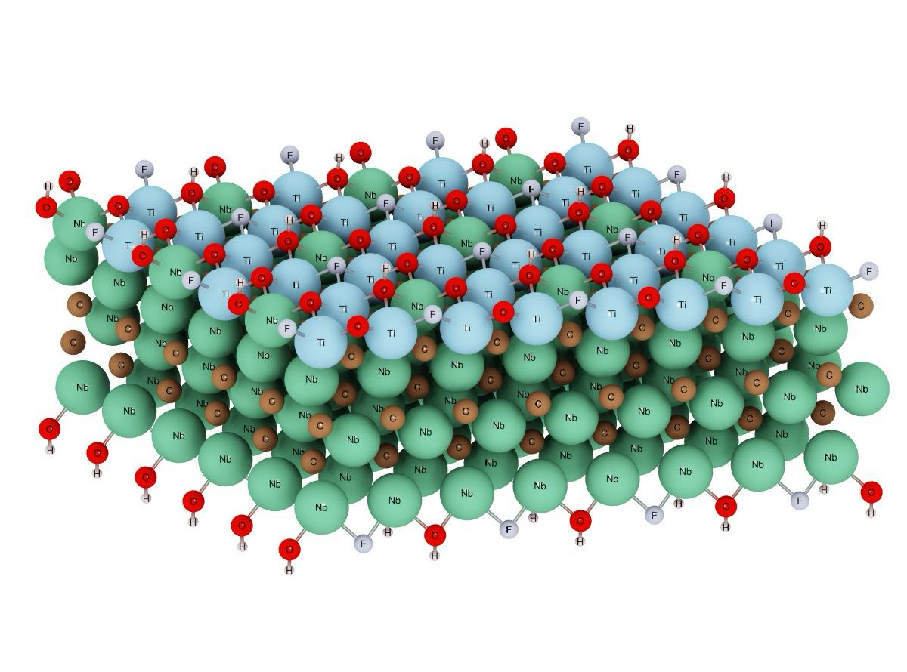
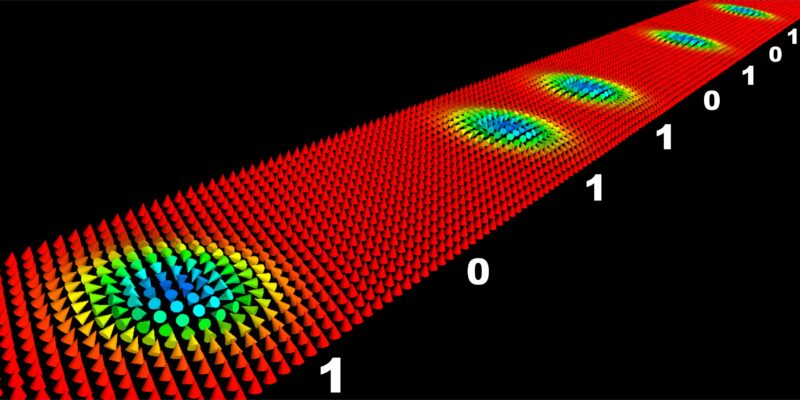

J. Ignacio Borge
Computational Chemist & Materials Scientist
Universidad de Costa Rica
Escuela de Química
Modelos de Ising, Heisenberg y Transiciones de Fase.
Del Teorema Mermin-Wagner a la Era 2D.
De las 10 familias 2D a los MXenes.
Del criterio de Stoner a la temperatura crítica.
Sustitución sistemática en (Nb,M)₄C₃Tₓ.
La física detrás del orden magnético en baja dimensionalidad.
Wilhelm Lenz propone un modelo donde los espines solo apuntan arriba o abajo ($\sigma_i = \pm 1$) — simetría discreta. Esta restricción será clave: es lo que permite escapar del futuro teorema Mermin-Wagner.
Ernst Ising resuelve el modelo en 1D: NO hay transición de fase. ¿Por qué? Un solo defecto (pared de dominio) cuesta energía finita pero gana entropía infinita — el desorden siempre gana.
Werner Heisenberg introduce espines vectoriales ($\mathbf{S}_i$) que rotan libremente en el espacio — simetría continua. A diferencia de Ising, esta libertad hará al modelo vulnerable: Mermin-Wagner demostrará que en 2D destruye el orden magnético.
Rudolf Peierls demuestra que el modelo de Ising 2D SÍ tiene transición de fase. Idea central: a temperatura baja, crear una frontera entre dominios cuesta más energía de la que se gana en entropía — el orden sobrevive.
Descubrieron que el modelo Ising a temperatura alta es matemáticamente equivalente al modelo a temperatura baja. El punto crítico está donde ambas descripciones coinciden: el punto auto-dual.
Onsager resuelve el modelo Ising 2D en campo cero — 24 años de desarrollo teórico. La solución reveló que el calor específico diverge logarítmicamente en $T_c$, un comportamiento inesperado que inauguró el estudio moderno de exponentes críticos.
Prohibe rigurosamente el orden magnético de largo alcance (LRO) en 2D a $T > 0$ para sistemas con simetría continua (modelo Heisenberg isótropo).
En términos simples: si los espines pueden apuntar en cualquier dirección libremente (simetría continua), las fluctuaciones térmicas los desordenan por completo en 2D. A diferencia de 3D, donde los vecinos "ayudan" a estabilizar el orden, en una lámina plana no hay suficientes vecinos para resistir el desorden.
Ulrich Gradmann evapora átomos de Níquel uno a uno sobre un cristal de Cobre y observa ferromagnetismo en películas de solo 3 capas atómicas (7 Å).
Distinción crítica: estas son películas epitaxiales — un metal 3D adelgazado que crece sobre un sustrato y depende de él (strain, hibridización). No es un material 2D van der Waals que pueda existir aislado. Por eso es un precursor, no el descubrimiento del magnetismo 2D.
Mermin-Wagner dice que no hay orden perfecto en 2D. Pero Kosterlitz y Thouless descubrieron un tercer estado: ni orden perfecto ni desorden total. Las espigas vecinas tienden a apuntar en direcciones parecidas — no idénticas, pero correlacionadas. Esa correlación se debilita lentamente con la distancia (cuasi-largo alcance).
Los vórtices: son remolinos naturales en el campo de espines — puntos alrededor de los cuales los espines giran 360°. Siempre nacen en parejas (horario + antihorario). Mientras permanezcan enlazados sus efectos se cancelan y el orden local sobrevive. La transición BKT es el momento en que al subir la temperatura, las parejas se rompen: los remolinos se liberan y destruyen las correlaciones.

Del prohibicionismo teórico a la revolución experimental de 2017.
Primer ferromagneto 2D intrínseco: una monocapa exfoliada mecánicamente que mantiene orden magnético sin sustrato. Detectado mediante efecto Kerr magneto-óptico (MOKE).
Segundo ferromagneto 2D, pero con física distinta: un semiconductor con espines casi isótropos (Heisenberg), mientras CrI₃ es un aislante con espines rígidos (Ising). Que ambos sean magnéticos confirmó que el magnetismo 2D funciona en distintas clases de simetría. Estable desde bicapa.
Estos materiales permiten crear
dispositivos espintrónicos totalmente 2D —
más delgados, eficientes y con funcionalidades no posibles con materiales 3D.
| CrI$_3$ | FM AFM inter | ~45 K (ML) | 2017 |
| CrCl$_3$ | A-type AFM | ~17 K (2-3 ML) | 2019 |
| CrBr$_3$ | FM | ~30 K (ML) | 2019 |
| Cr$_2$Ge$_2$Te$_6$ | FM | ~30 K (2 ML) | 2017 |
| 1T-CrTe$_2$ | FM | ~305 K (Bulk ~320 K) | 2020 |
| Cr$_2$Te$_3$ | FM | 160-280 K | 2020 |
| Cr$_3$Te$_4$ | FM | 344 K (ML) | 2021 |
| Cr$_5$Te$_8$ | FM | 130-160 K | 2022 |
| CrTe | FM | 140-200 K | 2020 |
| CrPS$_4$ | A-type AFM | 23 K | 2021 |
| CrSBr | A-type AFM | 146 K (ML) | 2021 |
| Cr$_2$S$_3$ | FiM | 120 K | 2019 |
| CrS$_2$ | FM | >300 K | 2022 |
| CrSe | FM | 280 K | 2019 |
| Fe$_3$GeTe$_2$ | FM | 130 K(ML)-205 K(b) | 2018 |
| Fe$_4$GeTe$_2$ | FM | ~310 K | 2020 |
| Fe$_5$GeTe$_2$ | FM | 270-300 K | 2019 |
| Fe$_3$GaTe$_2$ | FM | 350-380 K | 2022 |
| Co-Fe$_5$GeTe$_2$ | FM | 310-320 K | 2023 |
| MnBi$_2$Te$_4$ | A-type AFM | 18-23 K (3-5 ML) | 2020 |
| MnPS$_3$ | AFM | 40 K(ML)-76 K | 2020 |
| MnPSe$_3$ | AFM | 56-66 K | 2021 |
| MnSe | AFM | (Teórico $E_g$=1.8eV) | 2021 |
| VI$_3$ | FM | 50-60 K | 2020 |
| VSe$_2$ | FM | >300 K (ML) | 2020 |
| Fe$_7$Se$_8$ | FiM | >300 K | 2022 |
| Fe$_x$TaS$_2$ | FM | 31 K (11 ML) | 2022 |
| Ta$_3$FeS$_6$ | FM | 80 K | 2020 |
| V-WSe$_2$ | FM | Room Temp | 2020 |
| V-WS$_2$ | FM | 470 K | 2020 |
Materiales 2D altamente tuneables y funcionales.
Ti0.87O2
(BA)2(MA)Pb2I7
C (sp²)
BN
Ni3(HITP)2
MoS2
MoO3
Ti3C2Tx
P (fosforeno)
CrI3/Cr2Ge2Te6
Son una extensa familia de carburos y nitruros de metales de transición bidimensionales (2D). Su versatilidad estructural permite propiedades magnéticas y electrónicas "a la carta".
Mn+1XnTx


DFT como instrumento principal — complementado con métodos propios desarrollados según lo exija el proyecto.
¿Es el material magnético? Si el producto de la integral de intercambio ($I$) por la densidad de estados en $E_F$ supera 1, el sistema prefiere ser ferromagnético. Primer filtro — si no se cumple, nada más importa.
¿Cómo se acoplan los espines vecinos? $J > 0$ → ferromagnético (paralelos), $J < 0$ → antiferromagnético (antiparalelos). Puente entre DFT y los modelos de espines (Ising, Heisenberg).
¿Hacia dónde prefieren apuntar los espines? Determina el eje fácil (⊥ o ∥ al plano). Es exactamente la anisotropía que rompe la condición de Mermin-Wagner y permite el magnetismo 2D.
¿Hay texturas magnéticas no triviales? La DMI favorece configuraciones no colineales — espirales de espines, skyrmiones. Requiere ruptura de simetría de inversión, presente en interfaces y estructuras Janus 2D.
¿A qué temperatura se pierde el orden? DFT da los parámetros a $T = 0$ K. Para predecir cuándo se destruye el magnetismo, se alimenta un modelo de espines con $J$, MAE y DMI y se simula térmicamente.
En materiales 2D, la síntesis es lenta, las muestras son microscópicas y la caracterización requiere equipos especializados a temperaturas criogénicas. No se puede experimentar a ciegas — el DFT filtra candidatos antes del laboratorio.
Cada propiedad forma un pipeline secuencial: primero verificamos si el material es magnético, luego cómo se acoplan los espines, si el orden sobrevive en 2D, si hay texturas exóticas, y finalmente a qué temperatura se pierde todo.
Memorias no volátiles donde las interfaces vdW atómicamente planas reducen la corriente de switching en órdenes de magnitud vs. metales 3D. Switching sin campo magnético externo demostrado a RT.
Interfaces vdW atómicamente limpias (sin rugosidad ni interdifusión) permiten transporte de espín superior al 3D. Magnetorresistencia sintonizable por voltaje de compuerta.
CrI₃ actúa como barrera túnel y filtro de espín simultáneamente — imposible en 3D. Sus múltiples transiciones magnéticas generan estados multiresistencia y TMR colosal.
El bilayer CrI₃ actúa como barrera de espín conmutable por voltaje de gate — control puramente eléctrico del magnetismo, sin imanes. Compatible con lógica CMOS.
Paredes de dominio en Fe₃GeTe₂ generan estados de resistencia analógica (pesos sinápticos) naturalmente. No volátil y consumo ultrabajo (2 fJ/pulso).
Fuentes atómicamente delgadas con frecuencia sintonizable magnéticamente. Primera emisión THz topológica a RT lograda en Fe₃GeTe₂/Bi₂Te₃. Clave para 6G.
El espesor monocapa maximiza la sensibilidad superficial en campos débiles. Potencial en detección biomédica y NEMS (filtros de paso bajo sintonizables).
Skyrmiones topológicamente protegidos (robustos contra defectos), creados y movidos individualmente con pulsos de corriente. Tamaño sub-100 nm permite densidad ultrahigh.
El Horizonte Magnético de la Familia 3d.
Con el pipeline DFT definido y los dispositivos objetivo claros,
aplicamos la prospección a una familia específica de MXenes.
La Frontera Inexplorada
Nb: 5 electrones de valencia [Kr] 4d4 5s1
El sistema con Ti ya fue sintetizado y muestra orden magnético. La pregunta natural es:
¿Qué magnetismo emerge si sustituimos Ti por otros metales de transición 3d?
Cada elemento 3d aporta una configuración electrónica distinta — variando electrones d, acoplamiento de intercambio y anisotropía. El pipeline DFT nos permite explorar toda la familia antes de pisar el laboratorio.
Nb: 5 electrones de valencia [Kr] 4d4 5s1
No magnético — dato experimental
M = metal 3d, cada uno con distinto nval
Hipótesis: el host Nb₄C₃Tₓ es no magnético. Todo magnetismo emerge del dopante. Las sustituciones con Δe ≈ 0 perturban mínimamente la estructura electrónica, favoreciendo el orden FM. Los datos DFT lo confirman: solo V (Δe = 0) y Cr (Δe = +1) son ferromagnéticos.
Resultado del pipeline DFT aplicado a los 10 metales 3d como sustituyentes en el sitio M del MXene.
| Elemento | Config (3d) | nval | Δe (M − Nb) |
Momento Mag. (μB) |
Temp. Transición (°C) |
Estado | Conductividad (S/m) |
|---|---|---|---|---|---|---|---|
| Sc | 3d1 | 3 | −2 |
0.00
|
- | NM | 0.37 × 105 |
| Ti | 3d2 | 4 | −1 |
3.71
|
170.66 | AFM | 0.90 × 105 |
| V | 3d3 | 5 | 0 |
8.28
|
51.73 | FM | 0.45 × 105 |
| Cr | 3d5 | 6 | +1 |
17.08
|
23.39 | FM | 0.52 × 105 |
| Mn | 3d5 | 7 | +2 |
21.98
|
234.78 | AFM | 0.29 × 105 |
| Fe | 3d6 | 8 | +3 |
17.94
|
72.08 | AFM | 0.44 × 105 |
| Co | 3d7 | 9 | +4 |
10.23
|
110.71 | AFM | 0.38 × 105 |
| Ni | 3d8 | 10 | +5 |
6.35
|
94.93 | AFM | 0.89 × 105 |
| Cu | 3d10 | 11 | +6 |
0.00
|
- | NM | 0.38 × 105 |
| Zn | 3d10 | 12 | +7 |
0.00
|
- | NM | 0.85 × 105 |
Patrón clave: el momento magnético alcanza su máximo en el centro de la serie 3d (Mn, Fe, Cr > 17 μB) y decae hacia los extremos — consistente con la maximización del desdoblamiento de intercambio en capas d parcialmente llenas.
Candidatos FM: solo V y Cr muestran orden ferromagnético. Cr tiene mayor momento (17.08 μB), pero V presenta mayor Tc (51.73 °C) — ambos son candidatos prioritarios.
Ventana FM estrecha: Δe mide cuánto perturba el dopante la estructura electrónica del Nb host. Solo Δe = 0 (V) y +1 (Cr) preservan FM — sustituciones casi isovalentes. Mayor perturbación → AFM o NM.

Memoria Racetrack con Skyrmiones
Pequeños remolinos magnéticos (skyrmiones) se desplazan por una pista nanométrica con pulsos de corriente. Cada skyrmión almacena un bit — como cuentas en un ábaco, pero a escala atómica.
El magnetismo 2D existe gracias a la anisotropía — la escapatoria al teorema de Mermin-Wagner.
El pipeline DFT (Stoner → J → MAE → DMI → Tc) filtra candidatos antes del laboratorio.
Los MXenes (Nb,M)₄C₃Tₓ ofrecen una familia completa de candidatos magnéticos aún inexplorados.
El objetivo final: magnetismo 2D a temperatura ambiente para espintrónica de próxima generación.